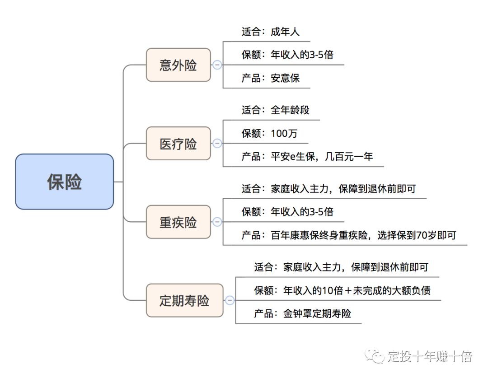

这一周，把自己的资金账户进行了分类，独立存取，同步整理了 MoneyWiz。
这期发点不一样的。先记录点关于保险的选择，然后谈一些自己的思考、计划。
如何选择保险
两个原则
- 不要考虑理财类保险，不仅收益率低，费用还很高。应该只购买纯消费型的保险，即只支出不返还的保险。
- 像重疾险、寿险等可以选择交费期限，期限越长每期缴纳的费用越低，但仍应优先选定期，因为我们完全可以通过指数基金获取更高的收益。
险种
我们需要的四类保险：重疾险、定期寿险、医疗险、意外险。
重疾险应该是第一个考虑的，分有一年期、定期和终身的三种。一年期重疾险看起来价格便宜，但实际上有个隐患，如果其间健康出现问题，下一年不保证一定能续保，而且一年期采用的是自然费率，随着年龄增长，保费也在不断增加，实际上计算下来费用是比较高的，并不划算。终身重疾险则价格太高，所以最好的选择是定期重疾险，保障到 70 岁足够了，省下的钱可以通过投资指数基金获得更高的收益。重疾险要保障的保额，一般是保障家庭年收入的3-5倍。
寿险是以死亡为条件的，这种情况对家庭的冲击也最大。所以要求保险能赔付的额度也是最高的。寿险保额一般要达到家庭年收入的10倍＋未还完的房贷等负债。
医疗险是报销制的，目的是为了覆盖超出社保部分的医疗费用。
意外险较便宜，一百多元就可以保一整年，交一年保一年，意外险要保障的保额一般是年收入的 3-5 倍即可。
所有保险费用加起来，应该不超过家庭总收入的 5-10%。
重疾险和寿险这两个费用比较高的保险，保障到财务自由或者退休就好。一来，年纪大的时候这两个险非常的不划算，二来，我们已经通过几十年的定投积累了大量的财富，对保险的保额需求不大了。

基本的观念是：用尽可能少的费用来买足对应额度的保险，省下的钱去投资低估的指数基金。
机遇与敏锐思维
《小狗钱钱》提到两个创造财富的基本原则： 1. 解决别人的难题 2. 专注在自己能力范围之内的事情
道理很简单，就是找到自己的 capability 和潜在的市场需求的重合点，通过这两个原则去发展机遇，不用说大学生，即使是小孩也能赚取自己的财富。
我不禁联想到《李笑来的“逃跑计划”》文中讲到的一则事迹：李笑来大三的时候，在长春火车站附近看到批发市场招商的广告，于是他跟老板商量，他回老家帮忙招商，条件是 10% 的提成，老板答应了。后来李笑来回到老家，借钱在当地报纸上发布广告，一周时间卖了 20 多万，短短时间拿了 2 万多的提成。但他却没要现金，而是把收益换了个位置不错的小柜台，跟人合伙做起批发生意，通过这个又赚了几十万。
想到同是大三的我在对发生在生活中的各类事情的漠不关心的状态，便觉有些自愧，虽然自恃要「有头脑地赚钱」，却对自己生活的环境、周边市场的运作知之甚少。受家庭教育的影响，从小时候起，对许多事我一贯是知其然而不知其所以然，不过受年龄和自我教育的影响，我对了解未知概念的需求逐渐提升，这是我在近一年明显感受到的事情。换句话说，我对含糊其辞和传统经验型的答案的忍耐度更低了，这甚至造成了一些和家人沟通上的矛盾。
我越来越强烈地感受到，机遇往往是偏袒那些具有敏锐思维和善于观察的人的，谁能从大家司空见惯的微不足道的事物中发现契机，谁就掌握了更多的机遇。
那么，如何才能从纷繁复杂的社会中捕获到有价值的信息呢？我当然不知道答案，但有两样东西我相信是好的：1）发展对事物运作方式背后机制的好奇心；2）主动的思考、交流和请教。
所以，我决定开始培养自己的思维敏锐性，这同时是我写财商周记的一个重要目的。在该系列的第一篇里，我已经提到过我已经在做把我认为重要的时事资讯记录到印象笔记这件事情，现在我要做出更近一步的计划——除网络了解的资讯外，每周记录下至少三点我对身边事物的观察思考，哪怕可能是贻笑大方的粗略见解。
观察
由于找不到很好的从印象笔记导出多项笔记的机制，摘录的资讯就不放上来了。
- 天津郊区有很多技术产业发展区，虽然可能环境挺安静也比较干净，但在我看来在缺乏活力甚至有些死气沉沉的园区工作完全没有吸引力。好在有了像XX这样的容纳了时尚品商店、餐饮店、咖啡馆、书店、演出中心、艺术馆这样的场所出来了，一下子承载了大量年轻人的社交、娱乐乃至精神需要。我猜测这种模式会越来越流行，作为附近企业对人才的吸引力因素，发展出向外辐射的地缘经济
- 长沙多处建材市场的经济状况已经持续低迷多月（不知道其他城市是不是一样的情况），考虑到现在房地产市场的情况，可能短时间内都不会好转，继续下去可能导致大量外来经商人员负下房租债并失业
- 天津许多高校的新校区都坐落郊区，但不是所有学校都像河工大一样有方便的公交和地铁，中医药、体育学院、天大、南大，这些学校通往市区的交通都非常不发达，晚上既没有地铁也没有公交，甚至可能打不到车，这样硬性的需求为什么没有得到解决呢？如果能建立一套足够有说服力的信任机制，且在法律允许范围内，一定程度上解决这些校区到地铁车站的交通问题，那应该是很值得投入去做的事情吧